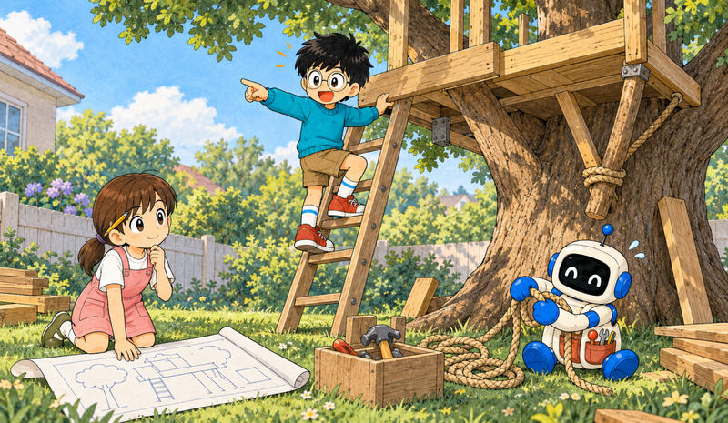
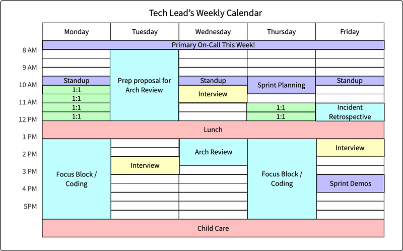
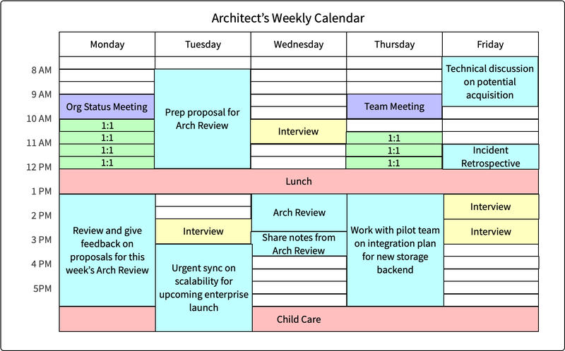
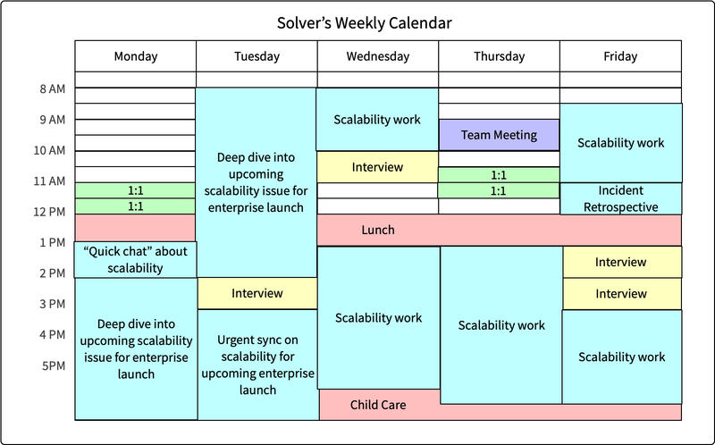
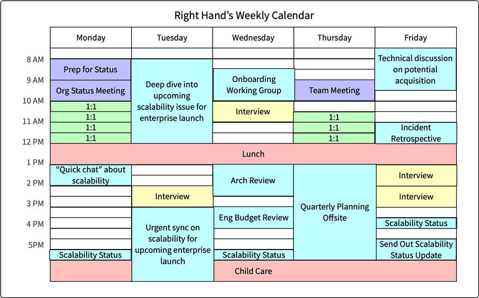

Feature 12 · VERBATIM · 2020 06
Staff archetypes
Most career ladders define a single, uniform set of expectations for Staff engineers operating within the company. Everyone benefits from clear role expectations, but career ladders are a tool that applies better against populations than people. This is particularly true for Staff-plus engineers, whose career ladders often paper over several distinct roles hidden behind a single moniker.

The more folks I spoke with about the role of Staff-plus engineers at their company, the better their experiences began to cluster into four distinct patterns. Most companies emphasized one or two of the patterns, and one pattern only existed in companies with many hundreds or thousands of engineers. A few companies didn’t feature any technical leadership pattern and pushed all their experienced engineers towards engineering management. In literature, recurring character patterns are called archetypes, such as the “hero” or the “trickster,” and the archetype term is helpful for labeling these frequent variants of Staff-plus engineers.
The four common archetypes of Staff-plus roles I encountered are:
The Tech Lead guides the approach and execution of a particular team. They partner closely with a single manager, but sometimes they partner with two or three managers within a focused area. Some companies also have a Tech Lead Manager role, which is similar to the Tech Lead archetype but exists on the engineering manager ladder and includes people management responsibilities.
The Architect is responsible for the direction, quality, and approach within a critical area. They combine in-depth knowledge of technical constraints, user needs, and organization level leadership.
The Solver digs deep into arbitrarily complex problems and finds an appropriate path forward. Some focus on a given area for long periods. Others bounce from hotspot to hotspot as guided by organizational leadership.
The Right Hand extends an executive’s attention, borrowing their scope and authority to operate particularly complex organizations. They provide additional leadership bandwidth to leaders of large-scale organizations.
This taxonomy is more focused on being useful than complete, but so far, I’ve been able to fit every Staff-plus engineer I’ve spoken to into one of these categories. Admittedly, some folks are easier to classify than others.
Tech Lead

Stories featuring Tech Lead archetype: Diana Pojar, Dan Na, Ritu Vincent
Tech Leads are the most common Staff archetype and lead one team or a cluster of teams in their approach and execution. They’re comfortable scoping complex tasks, coordinating their team towards solving them, and unblocking them along the way. Tech Leads often carry the team’s context and maintain many of the essential cross-team and cross-functional relationships necessary for the team’s success. They’re a close partner to the team’s product manager and the first person called when the roadmap needs to be shuffled.
Earlier in their career, they will have implemented their team’s most complex technical projects, but at this point, they default to delegating such projects across the team. They do this both to grow their teammates and in acknowledgment that the team’s impact grows as the Tech Lead‘s coding blocks shrink. While they’re coding less, they are still the person defining their team’s technical vision, and stepping in to build alignment within the team on complex issues.
The Tech Lead role is, for many folks, their first experience as a Staff engineer. A few forces conspire towards that result. First, the Tech Lead role tends to develop early on within companies that have a strong concept of team, which is common among companies using agile methodologies, and most companies attempt an agile approach at some point. Another factor is that the day-to-day work of a Tech Lead is most similar to the work you’d already be doing as a Senior engineer, making it a fairly intuitive transition. Most importantly, an organization needs roughly one Tech Lead for every eight engineers, making it far more common than other archetypes.
Somewhat confusingly, some companies use Tech Lead as a title, and others use it as a role. In this list of archetypes, the Tech Lead is one approach to operating as a Staff engineer, but it’s quite common to perform the Tech Lead role without having the impact expected of a Staff-level engineer. Indeed, you’ll find non-Staff engineers acting with the behaviors of every archetype. Being a Staff-engineer is not just a role. It’s the intersection of the role, your behaviors, your impact, and the organization’s recognition of all those things.
Architect

Stories featuring Architect archetype: Joy Ebertz, Katie Sylor-Miller, Keavy McMinn
The Architect title has fallen out of style in many companies, but the Architect role remains alive and well for folks operating at Staff-plus levels. Architects are responsible for the success of a specific technical domain within their company, for example, the company’s API design, frontend stack, storage strategy, or cloud infrastructure. For a domain to merit an Architect, it must be both complex and enduringly central to the company’s success.
There is a toxic preconception that Architects design systems in isolation and then pass their designs to others to implement. That does happen in some cases, but reciting that stereotype would slander the architects I interviewed. Influential architects dedicate their energy to maintaining an intimate understanding of the business’ needs, their users’ goals, and the relevant technical constraints. They use that insight to identify and advocate for effective approaches within their area of focus, and do it with organizational authority that they’ve earned by demonstrating consistently good judgment.
The Architect role tends to evolve in relatively large companies, companies with exceptionally complex or coupled codebases, and companies that are struggling to repay the technical debt they created in their initial sprint to product-market fit. Some companies push for Architects to remain deep in the codebase, and others set a clear expectation that Architects must not write code: both models work for some companies.
Solver

Stories featuring Solver archetype: Bert Fan, Nelson Elhage
The Solver is a trusted agent of the organization who goes deep into knotty problems, continuing to work on them until they’re resolved. Folks in this role are moved onto problems identified by organizational leadership as critical and either lacking a clear approach or with a high degree of execution risk.
Where most Staff-level roles require a very heavy dose of organizational wrangling, the Solver generally operates on problems that are already identified as organizational priorities and thus are called on to do relatively little org-level chiropractics. On the other hand, they generally stop working on problems once they’re contained, which can create the feeling of transience and requires a soft touch to avoid infuriating the teams left behind to maintain the “solved” problem.
The Solver is most common in companies that think of individuals, rather than teams, as the atomic unit of planning and ownership. In such companies, it’s common to see the Solver become prevalent in the place of the Tech Lead. You’re less likely to encounter this role at traditionally managed sprint-centric companies until those companies become relatively large or long-lived enough to acquire their own varietal of technical debt.
Right Hand

Stories featuring Right Hand archetype: Michelle Bu, Rick Boone
The Right Hand is the least common of the archetypes, showing up as an organization reaches hundreds of engineers and is akin to operating as a senior organizational leader without direct managerial responsibilities. Rick Boone compared his role to the Hand of the King in Game of Thrones and Leo McGarry from The West Wing, operating with the borrowed authority of a senior leader. However, borrowing authority comes with the obligation of remaining deeply aligned with that leader’s approach, beliefs, and values.
Folks in this role attend their leader’s staff meetings and work to scale that leader’s impact by removing important problems from their plate. Problems addressed at this level are never purely technical and instead involve the intersection of the business, technology, people, culture, and process. Right Hands often dive into a fire, edit the approach, delegate execution to the most appropriate team, and then pop over to the next fire elsewhere in the organization. The joy of these roles is that you only work on essential problems. The tragedy is that you’re always on to the next issue by the time those problems are solved.
Which is right for you?
As you think about which of these archetypes would fit you, start by reflecting on the kinds of work that energize you, and then consider which roles are available within your company.
All companies develop a need for engineers who can fill the Tech Lead role, which makes it the most accessible archetype to attain your first Staff engineering role. Companies that emphasize individual ownership rather than team ownership often develop the Solver early. On the other hand, companies that operate under strict sprints or agile methodologies tend to develop that role late, if ever. In the recent crops of fast-growing technology companies, the Architect and Right Hand roles have generally emerged as the organizations reached one hundred and one thousand engineers, respectively, and simply don’t exist beforehand. Companies with other strains of cultural DNA often develop them earlier, or sometimes never.
Success in these roles requires remaining engaged; it’s essential to understand what kinds of work energize you. The Tech Lead and Architect tend to work with the same people on the same problems for years, developing a tight sense of team and shared purpose. Some months their focus will be a top company priority, and sometimes they’ll be humming along so well that executives forget their team exists.
The Solver and Right Hand bounce from fire to fire, often having more transactional interactions with the folks they’re working with on any given week. They’re tightly aligned with executive priorities and are likely to receive recognition for addressing leadership’s most pressing problems. On the other hand, while they’ll nominally be on a team with other folks, there will generally be little-to-no overlap within their team’s areas of focus, and they’ll often have a limited sense of community.
For each archetype, you’ll find folks who love it and find it deeply rewarding, along with folks who find the work despair-inspiring. While it’s important to aim towards an archetype that fits you well, it’s also worth remembering that over your thirty or forty-year career, you’ll have long enough to spend some time sampling every archetype.